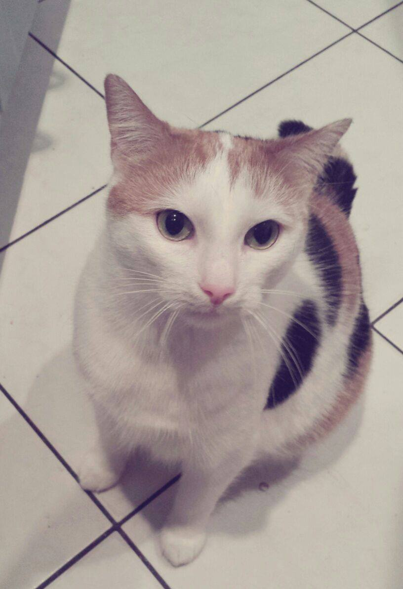

Kotki w Pythonie
Tomasz Magulski
Kim jestem?
Pracuję jako programista Pythona w STX Next...
...ale po pracy jestem też liderem brygady Koduj dla Polski.
Czemu o Pythonie dzisiaj mówię akurat ja?
To jest Guido


O co chodzi z kotkami?
To jest Tim
AMA na reddicie

The web framework for perfectionists with deadlines.
https://www.djangoproject.com/
MVC/MTV
- Modele
- Widoki
- Szablony

Autor: Jeff Croft
Podstawowym sposobem uruchamiania projektów w Django jest WSGI
WSGI
Web Server Gateway Interface
WSGI
The WSGI interface has two sides: the "server" or "gateway" side, and the "application" or "framework" side. The server side invokes a callable object that is provided by the application side.
Najprostsza aplikacja WSGI
def simple_app(environ, start_response):
"""Simplest possible application object"""
status = '200 OK'
response_headers = [('Content-type', 'text/plain')]
start_response(status, response_headers)
return ['Hello world!\n']
environ
- koniecznie słownik (dict)
- musi posiadać
- REQUEST_METHOD
- SCRIPT_NAME
- PATH_INFO
- QUERY_STRING
- CONTENT_TYPE
- CONTENT_LENGTH
- SERVER_NAME
- SERVER_PORT
- SERVER_PROTOCOL
- HTTP_*
start_response
- jest wykonywalna (callable)
- tutaj też argumenty tylko pozycyjne
- przyjmuje 2-3 argumenty
- status odpowiedzi jako ciąg znaków (200 OK)
- nagłówki odpowiedzi jako lista krotek
- opcjonalnie krokta - wynik sys.exc_info()
Jak działa aplikacja
- wykonuje drugi argument (start_response) z odpowiednimi argumentami
- zwraca iterarable
WSGI
- serwer może być jednocześnie aplikacją...
- ...a aplikacja serwerem
- middleware
Flask
To jest Armin
On the first of April 2010, I released a joke microframework called denied which made fun of the fact that all microframeworks at the time decided to forgo with dependencies and bundle up everything they need in a single Python file.
One month later there was a new project by the name of "Flask" which actually gave this concept a real shot.
zróbmy to!
czarno-biały kotek
def black_white_kitten(environ, start_response):
"""Kitten in black and white"""
status = '200 OK'
response_headers = [('Content-type', 'text/plain')]
start_response(status, response_headers)
with open('kitten.data') as f:
return f.readlines()
kolorowy kotek
def color_kitten(environ, start_response):
"""Kitten in color"""
status = '200 OK'
response_headers = [('Content-type', 'text/html')]
start_response(status, response_headers)
output = ['']
with open('kitten.color') as f:
for line in black_white_kitten(environ, lambda x, y: None):
for c in line:
if c == '\n':
output.append('\n')
continue
output.append(
'{}'.format(
f.readline()[:-1],
c))
output.append('')
return output
losowanie kotka
from random import choice
def application(environ, start_response):
app = choice((black_white_kitten, color_kitten))
return app(environ, start_response)
konfiguracja serwera
DocumentRoot /var/www/html
WSGIScriptAlias / /var/www/html/kittens.wsgi
ErrorLog ${APACHE_LOG_DIR}/error.log
CustomLog ${APACHE_LOG_DIR}/access.log combined
sprawdź to sam
FROM ubuntu
RUN apt-get update && apt-get install -y apache2 python-setuptools libapache2-mod-wsgi
WORKDIR /etc/apache2/sites-available
ADD 000-default.conf .
WORKDIR /var/www/html
ADD kittens.wsgi .
ADD kitten.data .
ADD kitten.color .
EXPOSE 80
ENTRYPOINT ["/usr/sbin/apache2ctl", "-D", "FOREGROUND"]